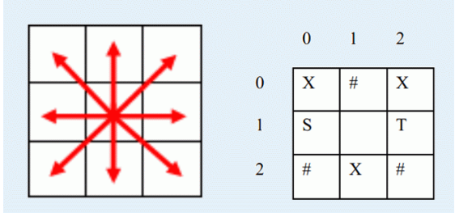

a180285 幸运地被选作了地球到喵星球的留学生，其实是作为特工去调查喵星人是否有侵略地球的企图。喵星人果然打算入侵地球！从a180285口中得到确切消息之后，地球防御小组成员决定制定反侵略计划。喵星到地球的一段必经之路可以看作 $n \times m$ 的格点，喵星人将会从地图上的 $S$ 位置出发，目的地是地球的入口 $T$。为了抵抗喵星人的入侵，地球防御小组打算在地图的格点上放置一些炮塔（最多放置 $K$ 个），炮塔攻击周围的 $8$ 个方向（$8$ 个方向分别是：东，南，西，北，东北，西北，东南，西南）（如下左图所示，中间格子的炮塔可以攻击周围的八个格子）。此外地球防御小组还可以在地图上放置无限多个障碍，使得喵星人无法从有障碍的格子经过。右图是 $3 \times 3$ 地图的一个示例，其中X表示炮塔，#表示障碍，有炮塔或障碍的格子喵星人都无法经过，在这张地图中喵星人从 $S$ 走到 $T$ 受到的伤害如下：
X
#
在 $S(1,0)$ 处受到伤害为 $2$（炮塔 $(0,0)$ 和 $(2,1)$ 能攻击到 $S$）。
在空地 $(1,1)$ 处受到伤害为 $3$（同时被炮塔 $(0,0)$ 和 $(0,2)$ 和 $(2,1)$ 攻击）。
在 $T(1,2)$ 处受到伤害为 $2$（炮塔 $(0,2)$ 和 $(2,1)$ 能攻击到 $T$），于是受到的总伤害为 $2+3+2=7$。
作为地球防御小组的一员，请你为喵星人布阵，使得喵星人受到的伤害最大。注意如果有多条从 $S$ 到 $T$ 的路径，喵星人会选择伤害最小的一条。

第一行为三个整数 $n , m , K$，分别表示地图的长和宽，以及最多能放置的炮塔数量。
接下来的 $n$ 行，每行包含 $m$ 个字符，#表示地图上原有的障碍，.表示该处为空地。
.
数据保证在原地图上存在 $S$ 到 $T$ 的路径。
输出在合理布阵下，喵星人采取最优策略后，会受到的最大伤害。
注意必须保证在布阵结束后喵星人仍然可以沿一条或以上的路径从起点 $S$ 到达终点 $T$，否则他们组织更大规模的侵略。
3 3 1 S.T ... ...
7
对于 $100\%$ 的数据，$1 \le N<=6 , 1 \le M \le 20 , 1 \le K \le 15$，且从 $S$ 到 $T$ 的路径必定存在。
 Comet OJ
Comet OJ